Chapter 62 - Year 2013
I will give an update on our family and our activities:
· Mike & Becky’s son, David, returned home from his mission in Africa and lots of family, including Ken & I, were at the airport to welcome him home.
· David’s sister, Paige, met a great young man, Garrett Kirschbaum, and they were married in the Timpanogos Temple on August 13th. We are happy to have Garrett in our family.
· We have a new great granddaughter, Maggie Lorraine, and the proud parents are Garrett and Nora Seymore. Shellie was so excited when Garrett married Nora, which gave her a beautiful daughter and now to have a granddaughter makes her sooooooooo happy. That doesn’t take away any of the love she has for her good husband and four wonderful sons, but she’s excited to have more girls in the family.
· Sandi, our oldest, called yesterday with the exciting news that her second daughter, Chelci, is expecting identical twin sons in March. Chelci wondered why she was so sick this time, but now she knows why. Steve & Chelci are scrambling to figure out how this news will affect their family and what changes they need to make.
· A great granddaughter, Kennedy Caires, JaNae & Brad’s daughter, was baptized this year.
Ken & I have had a wonderful year as we have spent time with our special family and many of our wonderful friends. We had a great spring, summer & fall with several family camping and fishing trips and vacations. We love to be out in nature, especially with our family.
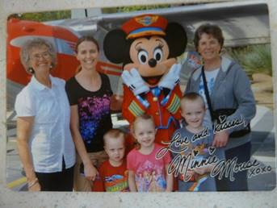Disneyland with Gail, her children and her mom, Marcy in May of 2013 - Ken and I were at Jeff & Gail’s one Sunday evening playing games when Gail started telling us that her and her mom were taking the children and going to Disneyland in May. She said that Jeff was going to take off a couple of days to fly down and meet them and be with them for a day and fly back. She said he didn’t have much vacation time, but she wanted him to be with her and the kids for part of the time.
In talking with them, it turns out that Jeff really didn’t want to go. He’s like Ken, he doesn’t like amusement parks and he didn’t have time to take off. He said: “Mom, you would like to go in my place, wouldn’t you?” He caught me off guard and I told him I would love to be with Gail, her mom and the kids, but that I needed to be home with Ken to keep him on our strict diet. He asked Ken if he wouldn’t be alright for a week as he thought it would be great to have two grandmas’ and their mom. That way each child could have someone to be with and go on rides with. Anyway, it turned out that he talked me and Ken into it, and Gail too, however, she was disappointed that Jeff couldn’t go. Jeff told me that since I would be going in his place and doing a favor for him, he would pay for me to go. I ended up going and having a wonderful time. Ken and I missed each other, but it was good spending more time with Gail and the children. Marcy was great about it too and I enjoyed being with her also.
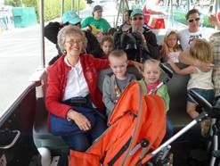Marcy took her vehicle and she packed all of us into it and all our luggage. She drove most of the time with Gail trading her off for a break now and then. I was willing to drive, but relieved that I didn’t have to as I was nervous driving her vehicle with all the precious cargo. We stayed with Gail’s sisters and their families. We stayed at Lisa & Ralph’s in St. George on the way down and back and we stayed with Debbie and her husband and children the five days we were there. We spent three full days at Disneyland and we had two down days where we could rest and relax at Debbie’s house and the children could have naps since we stayed late each time we were at Disneyland. Debbie and 2 of her children came one evening as they have a season pass. We took lunches with us and we bought the evening meals there. Gail took two strollers so Rachel and Matt didn’t have to walk all the time. That worked good, so we could put our lunches, etc. in them too. It was so fun watching the expressions and excitement as the children rode the rides with us or got their books signed by the princesses or cartoon characters – Mickey Mouse, Miney Mouse, Donald Duck, Pluto, Goofy, etc and also got pictures with them and with the Cars – Lightning McQueen, Mateur, etc. I enjoyed most of the rides, but there were a couple I wouldn’t go on again as they were too hard on my back & neck and they were too frightening for me, for the children too. The children were really good most of the time and it was a lot of fun. Gail had bought me a Disney T shirt for Mother’s Day as she wanted us all to match when we wore them there one day. That was fun too. Marcy is a wonderful person and Gail is a special daughter-in-law and great to be with. She is usually always happy and bubbly and excited about life, which makes it great for all of us. I was worried about staying with Gail’s sister’s and families as I am not one of the family, but they were all good to me and said they were glad to have me.
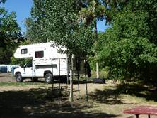Camping and fishing trips with my honey, with our boat and camper the summer of 2013- Since Ken and I didn’t get to use our boat and camper much last year because of working on preparations for the large Bushnell Reunion which was held in Tropic at Keela’s property in August, I decided we needed to use them more this summer and, so we had to plan way ahead to get reservations at the places we wanted to go. I went over the calendar, selecting times we could be away and then I showed Ken and talked it over with him. I then made reservations at Hyrum Reservoir for five days, Monday through Friday in June. I made reservations at Fish Lake for a week in July and I made reservations for a Monday through Saturday at Payson Lake for August. I also talked to Ken about us going to BYU Education Week the 19th through the 23rd of August as we have wanted to do that for a couple of years, but never got around to registering for it. He said to go ahead and make the reservations.
We invited any of our family to join us at Hyrum Reservoir and David, Shauna, Emily & Connor came up on Monday and stayed overnight and the next day. Tyler was at basketball camp in St George. We had a great time fishing, relaxing at our campsite, playing games, eating, etc. We were glad they could come.
We also invited Bryce & Deanna and they came up for a fish breakfast with us one morning and stayed most of the day. We enjoyed being with them and had a good visit. Deanna and I don’t get a change to visit together often, so it was great!
We thought that Sandi & Nick could go with us to Fish Lake as they always have. This year, 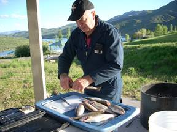however, the government was furloughing the government employees and he works for the government as a guard at Dugway Proving Grounds, so he wasn’t able to go and Sandi had already booked a vacation with one of her friends to Glazier National Park and Canada for two weeks, so she couldn’t go either. None of the others could go, so Ken and I still had a great time fishing and camping together. There was a good family camped by us which we got to know and enjoyed visiting with them. They were kind to us by taking us in their truck down to our boat. Ken and I love to be alone together anyway. We have fun whatever we are doing, especially vacationing. We have gone fishing at Strawberry Reservoir together also and staying overnight in the cabin there. That was fun too. Ken and Nick have gone together fishing both at Strawberry Reservoir and East Canyon Reservoir.
In August of 2013, Ken and I reserved a campsite for a week at Payson Lake. it ended up that only Jeff, Gail and the children were going to be with us for Friday night and Saturday and they were going to use our tent and share our campground, but Sherrie, Bob’s daughter had passed away from a liver disease caused by drinking alcohol, so we needed to leave on Friday as the funeral was early Saturday morning. When Jeff found out about it, they decided they wanted to go to the funeral so wouldn’t be coming up. We asked Scott if Kylan could come with us as he loves to camp and fish. Kylan was excited, so we had fun playing games together in the evenings and he and Grandpa went fishing several times. Sometimes they caught some fish and sometimes they didn’t. Sometimes I would stay and read in the camper and other times I would take my camp chair and book and watch them. Kylan loved the meals and snacks we had. He’s a cute boy and we enjoyed having him with us. Mike couldn’t come up, but Becky brought Maddi & Jessie and Jessie’s friend and spent part of one day with us and had supper with us.
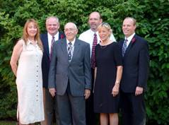 Sherrie, Bob’s daughter, (woman on the left), passed away that week from liver disease caused by alcoholism. Bob didn’t know that her and her husband drank a lot, so that was upsetting to him, and to lose his daughter just a couple of years after losing his wife was really hard on him. They were having the funeral on Saturday, so we called Scott to see if they wanted to come up and stay overnight both Friday and Saturday nights. We had reserved it for Saturday night as Jeff, Gail and the children were planning to come up after work on Friday night and stay in our tent in our camp site with us. Ken and I planned to leave Saturday night, so we could be home to go to church on Sunday. Scott & Mishelle had wanted to come up and bring their trailer before, but there were no campsites left, so they were excited to come up since they moved this summer and were so busy getting settled in and working on the yard that they hadn’t been able to go camping. Jeff decided if we were coming home, they wouldn’t go to Payson Lake, they would come to the funeral also. Ken and I were excited that all of our children except Shellie came to Sherrie’s funeral, mainly to support Bob. They all went to the cemetery afterwards where Ken dedicated the grave and they came back to the church and ate the luncheon that the Relief Society had prepared for all the family. We visited and enjoyed being together, even though it was a sad time, especially for Sherrie’s husband, Eric, and her son, Cole, and of course, Bob. (This picture is of Bob and his children at Carroll’s funeral. Sherry died a few months later. She was a heavy drinker and Bob didn’t even know it until the doctor told him at the hospital when she passed away.
We were able to go to Zion’s National Park. Jeff and Gail wanted to go to Zion’s Canyon again 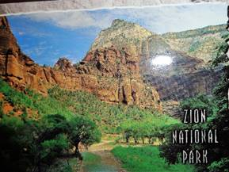this year in October, so I called all the family to see if any of the rest of them could go with us and Scott and Sandi wanted to go. It turns out that Scott didn’t get his reservation made and now he doesn’t have the vacation time to go anyway. David said he would be graduating from Medical School and getting a job, so didn’t know if they would be able to get away at that time and thought they probably would not be able to. Shellie said they couldn’t come as it is a lot of hiking and Roy can’t do that with his bad hip. Sandi & Nick were planning to go for a week, but Shellie invited her and Nick to go with them to San Diego in September for a week as Shellie & Roy were able to get a condo with two rooms and, so they went. Now Sandi doesn’t have enough vacation for the entire week at Zion’s, but they are coming for the Wednesday through Saturday. Mike & his family were coming too as it is their fall break, however, theirs was the week before Davis School District, so Ken and I decided Ken would take the time off, so we could make reservations to be with them on the 10th & 11th and then the others would come for Friday & Saturday and then Mike & family would go home and the others would be with us for the next week. Mike, however, found out later that he had to be to a conference in Chicago, so they wouldn’t be able to come to Zion’s. That makes it bad because Ken had already scheduled to take off work and he wouldn’t have had to and we would have just gone up on Monday with Jeff & Gail, rather than the previous Thursday. Oh well, we have to be flexible with family and not get upset when things don’t turn out as planned.
This all worked out, but we were afraid it wouldn’t as the government had shut down and they closed down all the national parks. We were hoping they would open the parks, but they didn’t, so finally our Utah governor told the president that Utah would pay to open the Utah National Parks as the state was losing so much money from tourists not being able to come. There are so many businesses that were losing money and might even lose their business as the national parks brought them in so many tourists who spend money in their shops, restaurants, etc.
Ken and I had decided we would at least go to Salt Lake, stay in a motel or hotel and eat out, go on the trolley, go to the temple, etc., since we had the vacation time. On Thursday we invited Grinn & Kathleen Clark and Ken and Vivian Shaw to go to the Bountiful Temple and then out to eat with us. The Clarks served in the Philippines with us and we love them, and the Shaw’s served in our California mission with us. Both couples live in Bountiful. We love them too. After eating, Ken and I went to our hotel to spend the night. David called the next morning, on our cell phones, and told us that the Utah National Parks were opening today. We were excited and called to make sure our reservations were still open. We didn’t hear back until we were almost there. We left the hotel and drove back to pack up and leave for Zion’s. We were thrilled that we got to go for at least most of our vacation.
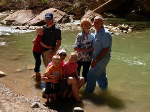 We again went in October for the school’s fall break as Ben and Rachel were both in school. Jeff, Gail & family & family came down on Monday and stayed the week. Their friends, Stewart and Nisha came down for the last couple of days too and they had reserved places for them and Jeff & Gail to go repelling. Ken and I tended Jeff & Gail’s children while they went. Sandi and her family went on the shuttle bus and trails that day.
Jeff had told Nolan that he should come down with Stewart and Nisha. Nolan and his family were coming to St. George and staying at a condo for that weekend, so at the last minute, he did come. He told me that when Jeff said that I would love to have him there, he wanted to come. Nolan is a cute nephew and we have always had a close relationship. I took Jeff’s children over to the sand area to play and Nolan came with us. He was cute with the children. Ben brought his insect net and container and wanted to catch lizards. He and his dad had caught some the day before, but his dad had him let them go that night. I promised him we would catch some, so Nolan played with Rachel & Matt in the sand while I took Ben to catch lizards. We did catch some, but he wanted to catch more so later Nolan went with him. Nolan’s leg is really bad, so it was hard for him to walk very far. We sat & visited some. He slept in the camper with us on Thursday night. Stewart and Nisha slept in our tent as Jeff & Gail brought Gail’s mother’s big tent for them to sleep in. They didn’t bring food, only snacks so ate meals with us. We were a little surprised that they didn’t offer to pay anything on the food, nor did they really thank us. Oh well, they’re nice people and good friends of Jeff & Gail’s. We brought Sandi’s table over and made a big family table with the two tables, so everyone could eat together and that was fun. We brought our big shad tent and put it up over the tables so in case it rained. It was colder than we expected this year. We also all crowded into our tiny table area in our camper and played games. Ken wasn’t feeling good the one night so went to bed. There was Sandi, Chelci, Nathan (who watched), Jeff, Gail, Stewart, Nisha, Nolan and I playing. It was crazy, but we had fun.
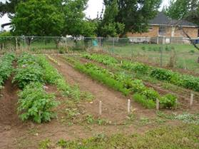We had a large garden again this year and so in between trips, we were watering and weeding and doing yard work. This fall we canned, froze & dried vegetables and fruit from our yard and garden, as well as ate lots of it fresh and gave lots to family and neighbors.
We enjoy time with the grandchildren, whether it’s watching them perform at sports events, piano or violin recitals, band concerts, going with them to activities or having them over while their parents go out for an evening. Many are grown and married so we don’t see them as often, but at special family activities, most are there. When Shellie & her family come up from Arizona, we all get together and it’s fun for those cousins to be with the Utah cousins again. I was able to spend a September couple of weeks with our Arizona family in. We/re looking forward to being together for Thanksgiving and our traditional Family Christmas party and I’m excited to have another traditional Grandchildren’s Christmas Party.
Ken and I were released from our callings as Family History Consultants and now I’m serving on the Relief Society committee and teach the 10-year old’s in Primary. They are a great class. Ken is the first assistant to the High Priest Group Leader.
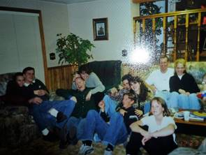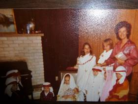We have always had Family Christmas Parties. At first, we would have them at my parent’s home in Clearfield and then for several years we had them at Georgia & Rick’s home in Fruit Heights as they have a large home. All our extended family came. We always had a dinner with all of us bringing food and then we would have a program. A nativity with the younger children playing the parts was always a mandatory part of the program and then other family members would share their talents. Rick would have all those who had gone on foreign missions and learned a foreign language stand with him and sing “Silent Night” in their own language. That was fun. Mom always loved the Christmas parties. After she passed away in 1999, we still had them at Georgia & Rick’s home until finally she told us that our families were getting so large, that it was hard having them at her home and she felt we should separate and each have our own family Christmas parties. Some of the younger generations were disappointed, but it was for the best.
We started having our Kenneth Browning Family Christmas parties at our home in Layton and then decided it would be better to hold them at our children’s homes, as they had larger homes. David & Sandi held the first ones in their homes. Then Jeff & Gail bought a larger home in Layton and we had them at their home too. Scott & Mishelle have a large home now too (2014) but now our family is so large – 47 of us, that our children rotate the responsibility and if they don’t want to hold them in their home they rent a conference room at a motel or reserve a church for it.
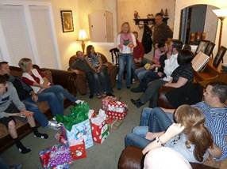This is an example of one of our Christmas parties. We went to David & Shauna’s for our family Christmas party. Every couple had an assignment this time. David & Shauna hosted the gathering at their home. Becky planned the dinner menu and assigned it out. Mishelle & Scott were over the program and since Chelci is on total bed rest, she couldn’t sing for us and our grandson, David, couldn’t get off work, so he couldn’t play for us, but Kylan brought his electric piano and played a fantastic piece for us, he doesn’t read music, but listens to it and learns it. He is very talented, it was a hard piece, but he didn’t make any mistakes. Kylan had taught Kaden a small piece and it was cute to watch him play it. Emily played a couple of pieces for us on her violin and it was beautiful. She is talented also. Sandi was over the games and we had a “game” exchange activity and we also played the “Right & Left” game with candy bars. Jeff was over getting & wrapping the Santa gifts for the children. We put them in our Santa bag and pretended that Santa left it on the doorstep. Grandma & Grandpa Browning gave the gifts out. It was a very enjoyable evening and all seemed to have a good time. it was late when we got home and I was tired.
Another time Jeff & Gail hosted the Family Christmas party at their home in Layton. Everyone brought food and we had a delicious Christmas dinner. We had a program with Kylan playing the piano, Chelci singing, Emily playing her violin and younger children singing and giving poems. We played “Mini-to-Winit” games in their family room and Grandma led the children in the game “Mr. Wright and Mrs. Wright” with candy bars passing to the right or to the left as Grandma reads the story. Santa also came and left his Christmas bag on the porch, so Grandpa & Grandma distributed them to the children. Sandi lead the adults in a fun Christmas gift exchange game. We all had a wonderful time. We have a close family and love to be together.